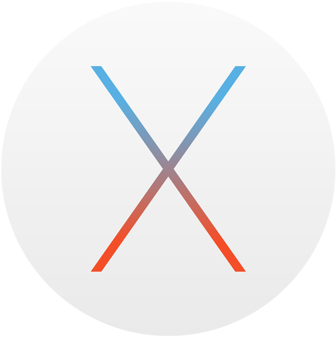

 Mac OS X ivp for EDT
Mac OS X is currently my favorite dance partner. It is a common practice among dance instructors, to have the students switch partners frequently during the class in order to get them used to dancing with different partners. Using OS X as a base platform I can seemlessly run virtualized windows and/or linux on demand.
While I mentioned this before, a good code editor is the hammer in a modern web application developers toolbox. For this project I am using one of Microsoft's latest concoctions, Visual Studio Code. It runs on windows, linux and os x. It's open source and forkable on github and I really like.